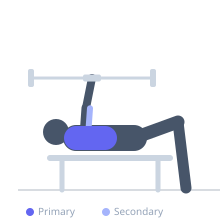
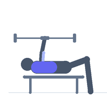

Exercise guide / Barbell Pullover
Barbell Pullover
The barbell pullover is a classic strength and hypertrophy exercise that challenges the chest and lats through a sweeping arc from above the chest to behind the head. The barbell allows for heavier loading than a dumbbell version and provides a bilateral symmetrical grip, making it a staple for developing chest thickness and upper-body flexibility.
Primary muscles
pectoralis major sternal
Secondary muscles
latissimus dorsi
triceps long head
Stabilizers
pectoralis minor
trapezius middle
Equipment
Standard Barbell
Flat Bench
Optional
Adjustable Bench (Incline / Decline)


Starting position
- Lie along or across a flat bench with upper back and shoulders supported. Grip the barbell with an overhand, shoulder-width grip, holding it above the chest with arms extended.
Setup
- Have a training partner hand you the bar, or lift it from the floor into position before lying back. Use a close grip to minimize stress on the shoulder at the extended position.
Steps
- Step 1: Lie on the bench holding the bar above the chest with arms nearly straight.
- Step 2: Keeping the arms straight, slowly arc the bar backward over and behind the head.
- Step 3: Lower until a full chest and lat stretch is felt, typically when the bar is below head level.
- Step 4: Drive the bar back over the face in a reverse arc, squeezing the chest.
- Step 5: Return to the starting position above the chest.
Coaching cues
- Let the chest open wide on the way down
- Think about moving the bar in an arc, not a straight line
- Exhale powerfully on the way back up
Breathing
- Inhale deeply during the descent to assist ribcage expansion. Exhale forcefully as the bar arcs back overhead.
Range of motion
- Lower the bar behind the head to a point of deep stretch without discomfort. Full extension of arms is the goal, but slight elbow bend is acceptable for joint safety.
Tempo
- 3-1-2-0
Common mistakes
- Using too wide a grip, increasing shoulder impingement risk
- Loading too heavily for the shoulder's stretched position to handle
- Losing control during the descent
Safety
- This exercise is contraindicated with shoulder impingement or rotator cuff issues
- Have a spotter assist with handing off and re-racking the bar
- Start with an empty bar or light load to establish the arc pattern
Training
- hypertrophy: 8–15 reps
- hypertrophy: 3–4 sets
- Rest: {'hypertrophy': 90}